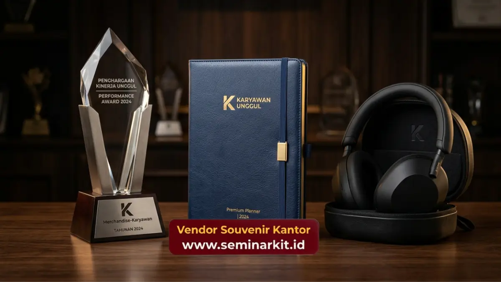

Merchandise karyawan untuk momen apresiasi kerja paling tepat diberikan pada saat onboarding, penghargaan kinerja tahunan, dan perayaan pencapaian tim.
Momen-momen ini memberikan konteks emosional yang memperkuat makna barang yang diterima karyawan.
Pemilihan jenis merchandise yang sesuai dengan momen akan meningkatkan nilai apresiasi yang dirasakan penerima.
- Momen onboarding cocok menggunakan paket welcome kit sebagai simbol penyambutan.
- Penghargaan kinerja tahunan lebih sesuai menggunakan merchandise premium bernilai fungsional tinggi.
- Perayaan pencapaian tim dapat menggunakan merchandise seragam untuk memperkuat kekompakan.
- Ketepatan momen pemberian memengaruhi tingkat kesan apresiasi yang diterima karyawan.
- Perencanaan waktu produksi penting agar distribusi merchandise sesuai jadwal acara perusahaan.
Kapan Momen Tepat Memberikan Merchandise Apresiasi kepada Karyawan
Momen tepat memberikan merchandise apresiasi kepada karyawan adalah saat onboarding, pencapaian target kerja, hari jadi perusahaan, dan penghargaan kinerja tahunan.
Setiap momen tersebut memiliki nilai simbolis berbeda yang memperkuat makna merchandise yang diberikan.
Pemberian merchandise pada momen yang tepat membantu menciptakan asosiasi positif antara pengalaman kerja karyawan dengan identitas perusahaan, sehingga nilai apresiasi yang dirasakan menjadi lebih bermakna dibanding pemberian tanpa konteks jelas.
Selain momen formal, beberapa perusahaan juga memberikan merchandise pada momen informal seperti perayaan ulang tahun karyawan atau pencapaian masa kerja tertentu, sebagai bentuk perhatian personal terhadap kontribusi jangka panjang karyawan.
Merchandise untuk Momen Onboarding Karyawan Baru
Merchandise untuk momen onboarding karyawan baru umumnya berupa paket welcome kit berisi tumbler, notebook, dan tote bag yang dikemas rapi sebagai simbol penyambutan. Paket ini memberikan kesan pertama yang positif terhadap budaya kerja perusahaan.
Pemberian merchandise pada hari pertama kerja juga membantu karyawan baru merasa lebih cepat menjadi bagian dari tim, terutama pada perusahaan dengan proses adaptasi budaya kerja yang cukup kompleks.
Desain welcome kit yang konsisten dengan identitas brand turut memperkuat kesan profesional perusahaan di mata karyawan baru sejak awal masa kerja mereka.
Merchandise untuk Penghargaan Kinerja Tahunan
Merchandise untuk penghargaan kinerja tahunan umumnya berupa barang premium seperti ransel laptop, jaket custom logo, atau power bank berkualitas tinggi.
Nilai fungsional dan daya tahan barang premium memberikan kesan penghargaan yang lebih signifikan dibanding merchandise standar.
Pemberian merchandise premium pada momen penghargaan kinerja juga membantu memperkuat motivasi kerja karyawan, karena barang tersebut menjadi simbol pengakuan formal atas kontribusi yang telah diberikan sepanjang periode kerja.
Perusahaan dapat menyesuaikan tingkat kualitas merchandise dengan kategori penghargaan yang diberikan, sehingga proses distribusi tetap proporsional dengan anggaran program penghargaan tahunan.

Merchandise untuk Perayaan Pencapaian dan Kekompakan Tim
Merchandise untuk perayaan pencapaian tim biasanya berupa barang seragam seperti kaos polo atau topi custom logo yang digunakan bersama pada momen tertentu. Penggunaan barang seragam ini memperkuat kesan kekompakan sekaligus identitas kolektif tim.
Pada acara gathering atau outing perusahaan, merchandise seragam turut menciptakan dokumentasi visual yang konsisten dan profesional, yang dapat digunakan kembali untuk kebutuhan komunikasi internal maupun eksternal perusahaan.
Pemilihan warna dan desain yang selaras dengan identitas brand perusahaan turut memperkuat kesan formal pada dokumentasi acara, terutama saat perusahaan mengunggah momen tersebut ke platform komunikasi resmi.
Perencanaan Waktu agar Distribusi Merchandise Sesuai Jadwal Acara
Perencanaan waktu produksi menjadi faktor penting agar distribusi merchandise apresiasi sesuai dengan jadwal acara perusahaan, terutama untuk pesanan custom logo dalam jumlah besar yang membutuhkan proses desain dan produksi lebih panjang.
Koordinasi awal terkait jenis barang, jumlah penerima, dan tenggat waktu distribusi membantu memastikan proses produksi berjalan sesuai target tanpa mengorbankan kualitas hasil akhir merchandise.
Jika perusahaan Anda sedang mempersiapkan program apresiasi kerja, onboarding karyawan baru, atau perayaan pencapaian tim, kunjungi vendorsouvenirkantor.web.id untuk berkonsultasi mengenai jenis merchandise karyawan yang sesuai dengan momen dan anggaran perusahaan Anda.
Ketepatan momen dan jenis merchandise karyawan sangat memengaruhi nilai apresiasi yang dirasakan tim, mulai dari onboarding, penghargaan kinerja, hingga perayaan pencapaian bersama.
Perencanaan waktu produksi yang matang turut memastikan distribusi berjalan lancar sesuai jadwal acara.
Segera konsultasikan kebutuhan merchandise karyawan untuk momen apresiasi kerja perusahaan Anda melalui vendorsouvenirkantor.web.id.

Banner promosi: klik gambar untuk langsung terhubung ke WhatsApp tim sales.